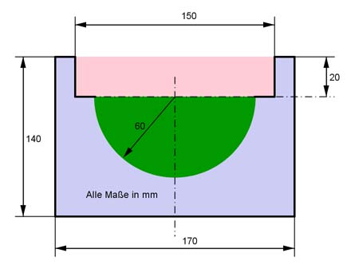

Aufgabe 153 Wie lang wird die dargestellte Rinne, wenn sie aus 1 m³ Beton hergestellt wird?  VRinne = G * l | :G VRinne -------- = l G G = blaues Rechteck - grüner Halbkreis - rotes Rechteck G = 170 mm * 140 mm - π * 60² mm²/2 - 150 mm * 20 mm G = 23 800 mm² - 5 652 mm² - 3 000 mm² = 15 148 mm² = 151,5 cm³ 1 m³ = 1 000 000 cm³ 1 000 000 cm³ l = --------------- = 6 600 cm = 66 m 151,5 cm²